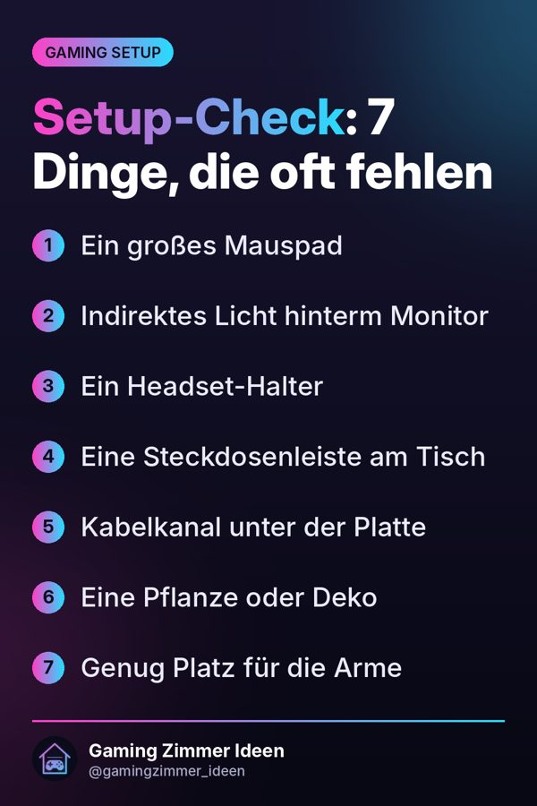

Setup-Check: 7 Dinge, die in fast jedem Gaming-Setup fehlen

Mach den Setup-Check: Ein großes Mauspad, indirektes Licht hinter dem Monitor, ein Headset-Halter, eine Steckdosenleiste direkt am Tisch, ein Kabelkanal unter der Platte, eine Pflanze oder Deko und genug Platz für die Arme. Was fehlt bei dir noch?
Auf einen Blick
- Ein großes Mauspad
- Indirektes Licht hinterm Monitor
- Ein Headset-Halter
- Eine Steckdosenleiste am Tisch
- Kabelkanal unter der Platte
- Eine Pflanze oder Deko
- Genug Platz für die Arme
Tipp: Fang mit dem Kabelkanal an: Er kostet wenig, und danach sieht der ganze Schreibtisch sofort ordentlicher aus.